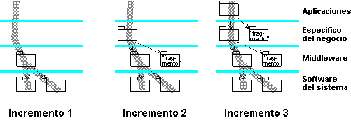

|
Al inicio de esta tarea, se han entregado subsistemas de implementación para satisfacer los requisitos de la siguiente
compilación (de 'destino') descrita en Producto de trabajo: Plan de compilación de integración, teniendo en
cuenta que el plan de compilación de integración puede definir la necesidad de varias compilaciones en una iteración.
Dependiendo de la complejidad y del número de subsistemas a integrar, a menudo es mejor producir la compilación de
destino en varios pasos, añadiendo más subsistemas con cada paso y produciendo una serie de 'minicompilaciones'
intermedias. De esta forma, cada planificación prevista para una iteración puede tener su propia secuencia de
compilaciones intermedias transitorias. Estas estarán sujetas a una prueba de integración mínima (normalmente un
subconjunto de las pruebas descritas en el plan de compilación de integración de esta compilación de destino) para
garantizar la compatibilidad de cada adición con el espacio de trabajo de integración del sistema existente. Con este
enfoque será más fácil aislar y diagnosticar problemas.
El integrador acepta los subsistemas entregados de forma incremental en el espacio de trabajo de integración del
sistema, resolviendo en el proceso los conflictos que surjan en la fusión. Se recomienda realizar esta operación
de manera ascendente en la estructura de capas, comprobando que las versiones de los subsistemas son coherentes y
teniendo en cuenta las importaciones. El incremento de subsistemas se compila y se enlaza en una compilación
intermedia, que se proporciona después al verificador para que ejecute una prueba de integración del sistema mínima.

Este diagrama muestra una compilación producida en tres incrementos. Algunos sistemas sólo son necesarios como
fragmentos para simulación, para que sea posible compilar y enlazar los otros subsistemas, y proporcionan el
comportamiento del tiempo de ejecución mínimo básico.
El incremento final de una secuencia produce la compilación de destino, tal como está previsto en el plan de
compilación de integración. Cuando esta se ha probado mínimamente, se crea una línea base inicial o provisional para
esta compilación, invocando la Tarea: Crear líneas base en la disciplina Gestión de la
configuración. La compilación se pone entonces a disposición del verificador para que realice una prueba completa del
sistema. La naturaleza y la profundidad de esta prueba será la especificada en el plan de compilación de integración,
estando la última compilación de una iteración sujeta a todas las pruebas definidas en el plan de prueba de
iteración.
|